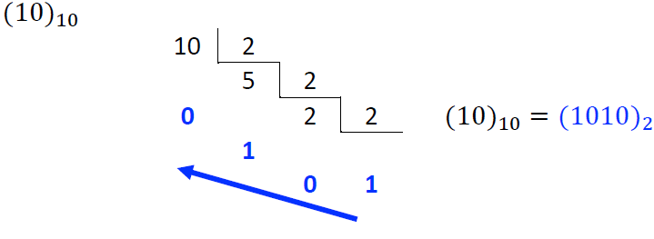
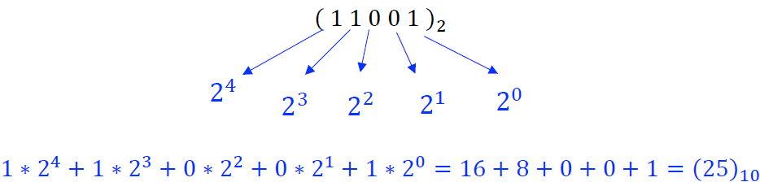

Sistema Binário
É o sistema de numeração de base dois, ou seja, possui dois símbolos que representam todos números, 0 e 1. Para arranjar os digitos é usado o mesmo método utilizado no sistema decimal, após os dois símbolos serem usados eles são combinados.
EX:
0, 1, 10, 11, 100, 101, 110, 111 ...
Tabela de relação entre Decimal e Binários
| Decimal |
Binário |
Decimal |
Binário |
Decimal |
Binário |
| 0 |
0 |
11 |
1011 |
22 |
10110 |
| 1 |
1 |
12 |
1100 |
23 |
10111 |
| 2 |
10 |
13 |
1101 |
24 |
11000 |
| 3 |
11 |
14 |
1110 |
25 |
11001 |
| 4 |
100 |
15 |
1111 |
26 |
11010 |
| 5 |
101 |
16 |
10000 |
27 |
11011 |
| 6 |
110 |
17 |
10001 |
28 |
11100 |
| 7 |
111 |
18 |
10010 |
29 |
11101 |
| 8 |
1000 |
19 |
10011 |
30 |
11110 |
| 9 |
1001 |
20 |
10100 |
31 |
11111 |
| 10 |
1010 |
21 |
10101 |
32 |
100000 |
CONVERSÃO
Base 10 para Base 2:
Para transformarmos um número de base 10 para um número de base 2, é necessário realizar divisões sucessivas do valor por 2, do seguinte modo:
- Dividimos o número decimal por 2 e guardamos o resto;
- Dividimos o quociente por 2 e repetimos o processo até o resto ser 1;
- O número de base dois vai ser a sequência de restos obtidos junto com o último quociente, começando pela direita;

Exemplo retirado do material disponibilizado pela professora Valéria Lessa.
Base 2 para Base 10:
Os dígitos binários devem ser multiplicados por potências de 2, começando pelo último dígito e termimando no primeiro.

Exemplo retirado do material disponibilizado pela professora Valéria Lessa
Operações com números binários:
Operações de números binários seguem as mesmas regras de operações realizadas com números decimais
Adição:
0 + 0 = 0
1 + 0 = 1
1 + 1 = 10 - O "0" fica e o "1'" é transportado para a próxima casa
1 + 1 + 1 = 11 - O "1" fica e o outro "1" é trasportado para a próxima casa
Exemplo retirado do material disponibilizado pela professora Valéria Lessa
Subtração
0 - 0 = 0
1 - 0 = 1
1 - 1 = 0
0 - 1 = 1 - Devemos "pedir emprestado", então ficará 10 - 1 = 1
Exemplo retirado do material disponibilizado pela professora Valéria Lessa
Multiplicação:
0 . 0 = 0
1 . 0 = 0
1 . 1 = 1

Exemplo retirado do material disponibilizado pela professora Valéria Lessa
Divisão
O quociente sempre será 0 ou 1

Exemplo retirado do material disponibilizado pela professora Valéria Lessa
Voltar a página inicial